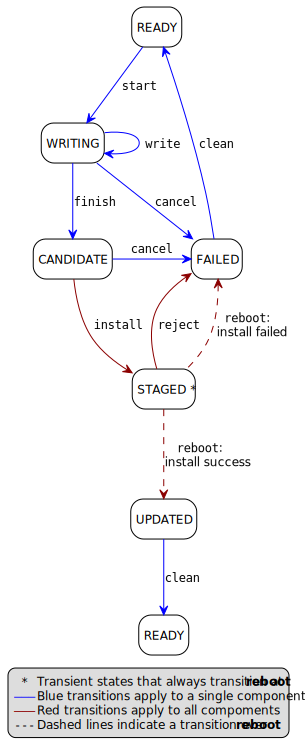
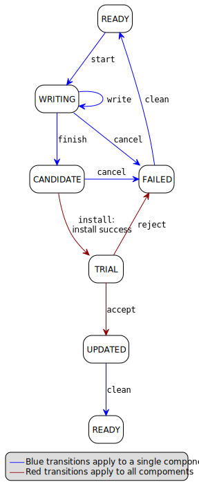

C. Variation in system design parameters¶
Depending on the system design and product requirements, an implementation can collapse a chain of transitions for a component, where this does not remove information that is required by the Client, or compromise other system requirements. This can result in some states and transitions being eliminated from the state model for that component’s firmware store.
Some possible variations are the following:
Reboot required |
Trial required |
Description |
|---|---|---|
Yes |
Yes |
See full state model |
Yes |
No |
See no-trial model |
No |
Yes |
See no-reboot model |
No |
No |
C.1. Components that require a reboot, but no trial¶
If a component does not require testing before committing the update, the the TRIAL and REJECTED states are not used. The reboot operation that installs the firmware will transition to UPDATED on success, or FAILED on failure. The accept operation is never used, the reject operation is still used to abandon an update that has been STAGED.
The simplified flow is as follows:
C.2. Components that require a trial, but no reboot¶
If a component does not require a reboot to complete installation, the STAGED state is not required. The install operation will complete the installation immediately, transitioning to TRIAL if successful.
This use case also removes the REJECTED state, because the reject operation from TRIAL state does not require a reboot to complete. A reject operation from TRIAL states transitions directly to FAILED.
The simplified flow is as follows:
Notes
There is no ability for the update service to automatically reject a TRIAL, because the “
rebootwithoutaccept” condition used for this purpose in the full state model is not available in this use case.
C.3. Components that require neither a reboot, nor a trial¶
If a component does not require a reboot to complete installation, and does not require testing before committing the update, then the STAGED, TRIAL, and REJECTED states are not required. The install operation will complete the installation immediately, transitioning to UPDATED if successful. The accept and reject operations are not used.
The simplified flow is as follows: